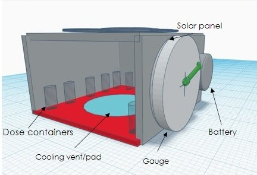

Features Of the Cooler

Our cooler's features allow it to be ahead of the game. The cooler
combines the normal power source with renewable energy also
known as solar panels. It has an internal clock that switches to battery
power in the night and solar in the day, keeping the cooler functioning
at all times.
The cooler also includes...
- 14 stable holders for doses - These holders will hold the doses regardless of any roughing.
- Chargeable Solar Panels-These coolers help use clean, pure energy from the sun to help keep the vaccines cold.
- Internal battery which can be changed out - This battery helps
- A gauge which shows battery life and temperature - This makes it easy for the transporter to moniter how much battery is left and what temperature the cooler is at.
- An alarm which sends an alert when temperatures are out of range - This helps the person transporting the cooler to know when the vaccines are experiencing hash conditions.
- Internal clock that changes the settings of the battery based on time - These coolers run on solar powered energy during the day and have a set time that automatically switches to the battery.
- Sealed from water and the atmosphere - Being sealed from outside forces helps the vaccines be transported safely and work well.
- The cooler also comes with a downloadable app that, if possible, recieves information (temperature, battery life, etc) from the cooler and sends to the user.